That's a Wrap!
Please review the following Learning Goals of this section and check the Success Criteria you already achieved.
Learning Goals
Students can use radian measurement to represent the size of an angle.
Students can use the Cartesian plane to evaluate the trigonometric ratios for angles between 0 and 2π.
Students can use radians to graph the primary trigonometric functions.
Students can use transformations to sketch the graphs of the primary trigonometric functions in radians.
Students can graph the reciprocal trigonometric functions and determine their key characteristics.
Students can model and solve problems that involve trigonometric functions and radian measurement.
Students will examine average and instantaneous rates of change in trigonometric functions.
Success Criteria
You are successful in this lesson if you….
I can use the Cartesian plane to evaluate the trigonometric ratios for angles between 0 and 2π .
Summary
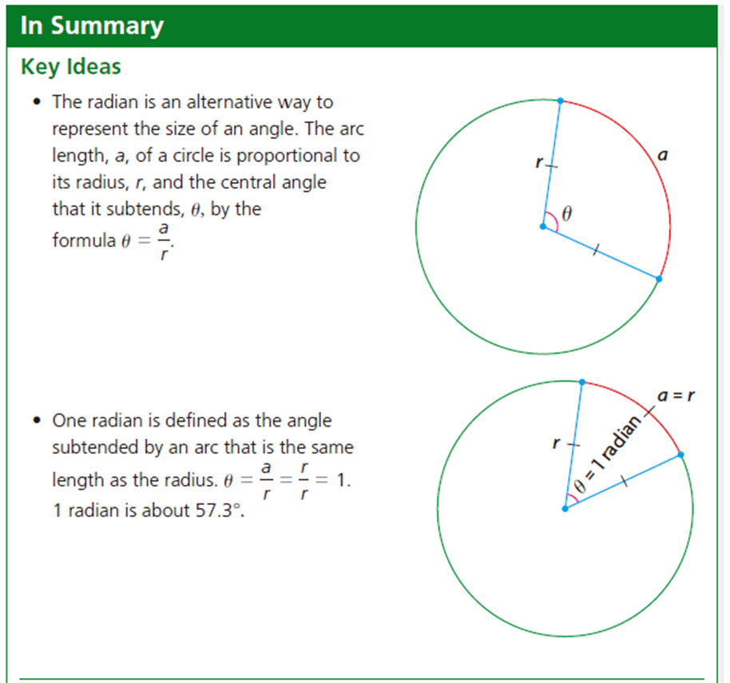
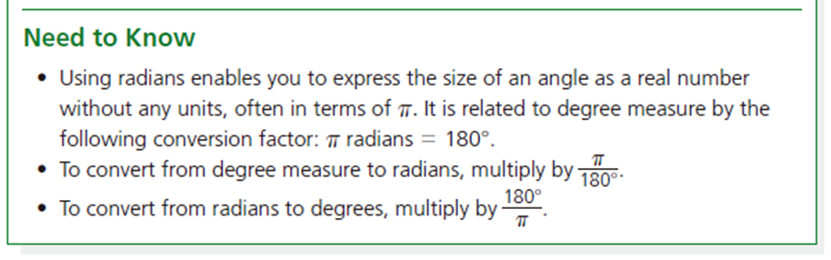
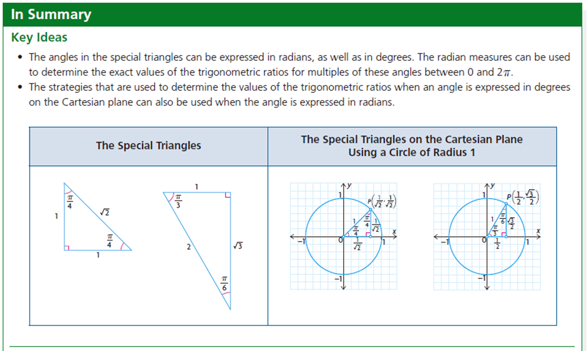
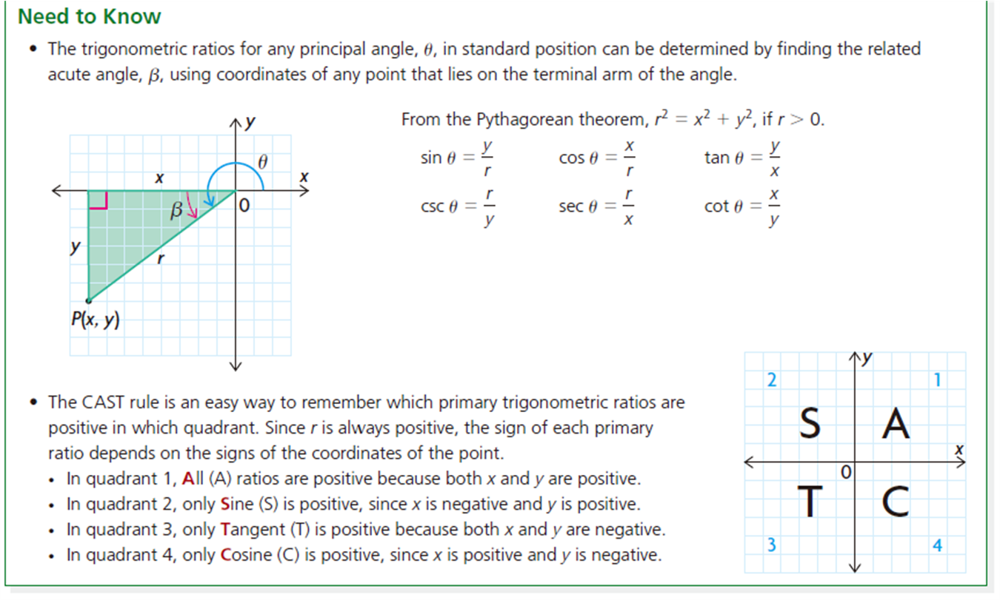
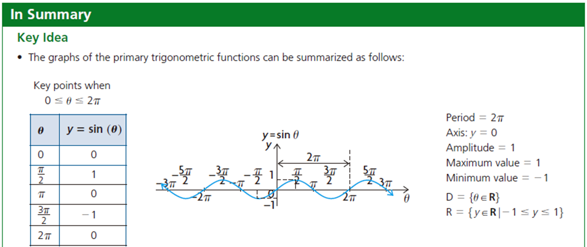
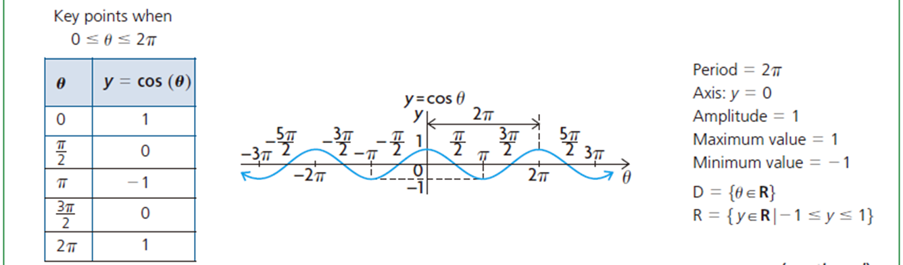
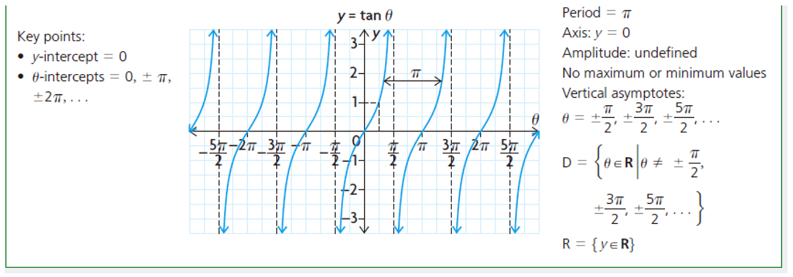
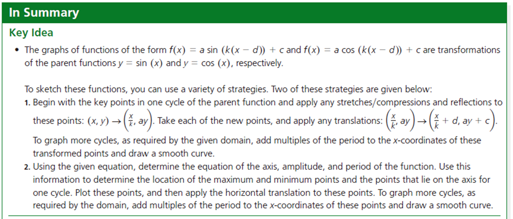
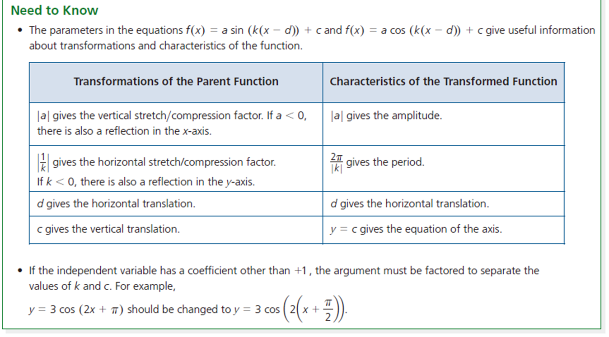
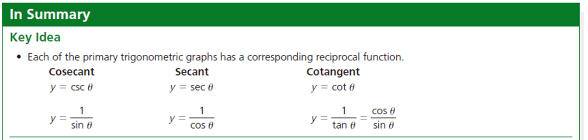
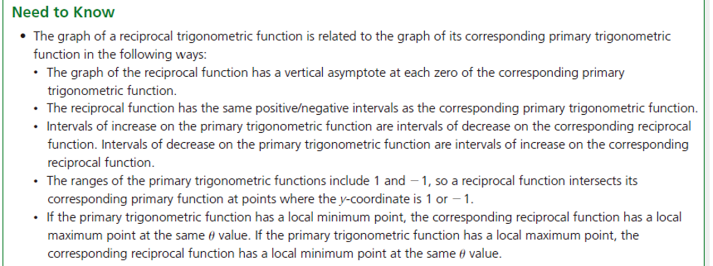
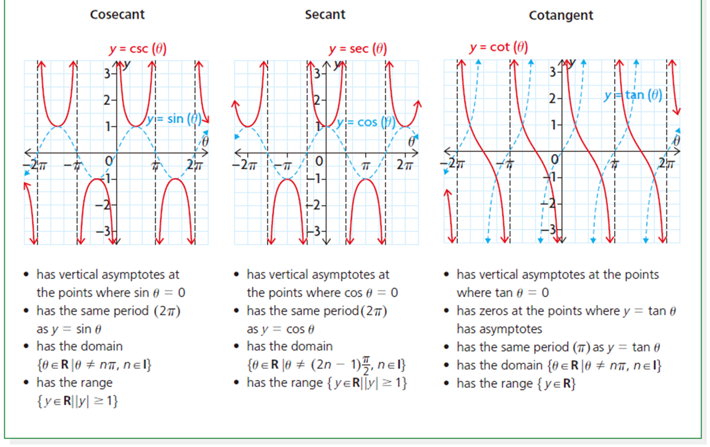
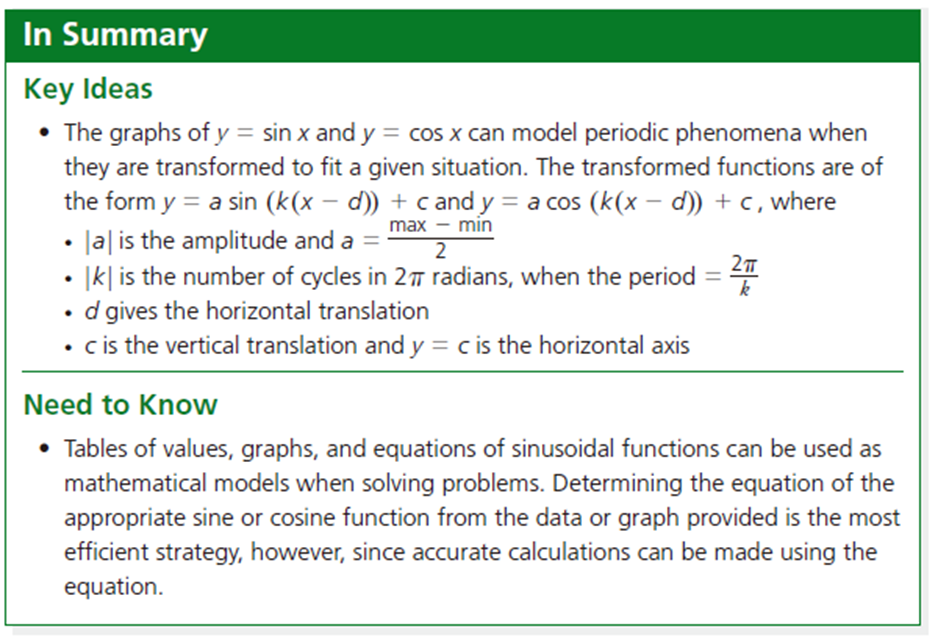
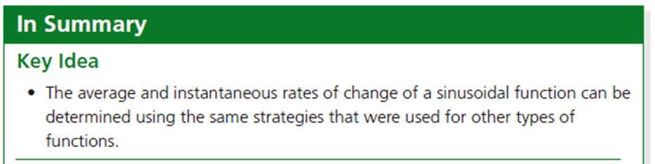
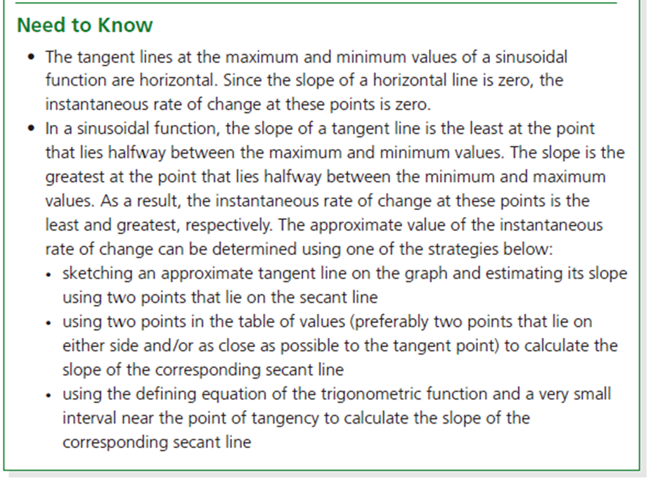